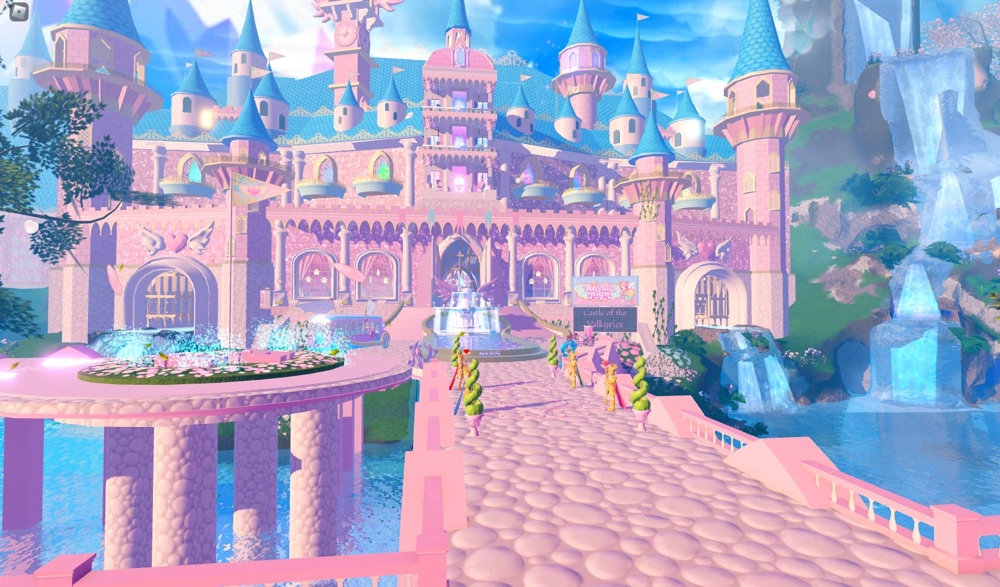

Prompt 1
What does the technology do? What do people use it for?
Roblox is an online gaming and creation platform made for people of all ages. Users can play games with others online as well as create games, customized avatars, and items. It's a free-to-play platform that integrates a virtual currency that users can spend on add-ons for games or to customize their characters.
Who uses this technology?
Roblox was originally designed to be for children, but it has expanded since the original release to be for all ages. They have also recently put out a new way for those younger than 16 to safely use Roblox through age-based accounts. They have also added a requirement for those who are age-verified as 17+ to have access to certain restricted features that aren't allowed for anyone 16 and under.
Who else is affected by this use of the technology?
Parents can definitely be affected by their children using Roblox since a lot of the features and overall account creation process require parental involvement. If a child wants to spend money on Robux, then the parent needs to be involved in that purchase too to ensure there is no unauthorized spending taking place. They also should be very involved when it comes to how their children are using Roblox because they could be involved in things that aren't appropriate or interacting with other users who are a possible danger to them.
Who decided to use this technology? Why did they decide to use it?
Many people around the world have decided to use Roblox. With there currently being over 10 billion registered accounts and around 144 million daily active users, there are so many out there who choose to use Roblox every day. A Wired article from 2021 speaks about Roblox and how the author's kids are heavily interested in playing on the platform during their time in quarantine. The author, Simon Hill, also interviewed the creator of the game Royale High, who spoke about how there are many different players who can find something in common who will "have my same mindset and like the same things as me." Hill wrote about the different features as well, which is good for parents, but the interview with the game creator, Callmehbob, showed so much detail about how young adults can have a major interest in game design and the platform. He mentions how she started in 2007 at the age of 12, and at the age of 22 in 2017, she started developing a game which has become a huge hit. It currently has a total of over 10 billion visits and a community with over 1.1 million members.

How well does this technology do the thing people are using it for? What unintended consequences arise out of using this technology?
Roblox has improved so much over the past 20 years. It has expanded and added so many new features, and many users are able to use all of them in multiple different ways. The addition of new features, such as their voice chat feature, can also lead to possible problems, such as children being exposed to swearing or the possibility of any inappropriate terms being said online. They do have a filtering system to put bans in place for those who swear, but it might not fully block out any bad terms. Accounts for those under 16 are also set up to only hear others in their age group, which provides an extra layer of safety for younger players.